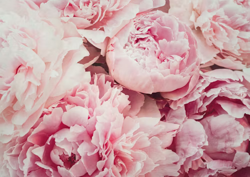

PEONIAS

O que é?
As peônias são flores do gênero Paeonia, conhecidas mundialmente por sua beleza exuberante e pétalas delicadas que parecem camadas de seda. Elas são nativas da Ásia, Europa e do oeste da América do Norte. Consideradas o símbolo da prosperidade e da honra, essas flores são muito utilizadas em buquês de noiva e decorações de luxo devido ao seu perfume doce e sua aparência romântica.
Como cuidar?
Para cuidar de uma peônia e a manter saudável, siga estas dicas essenciais:
- Luz: Peônias amam luz solar! Elas precisam de pelo menos 6 horas de exposição direta por dia.
- Solo: O solo deve ser rico em matéria orgânica e ter uma excelente drenagem para evitar o apodrecimento das raízes.
- Rega: Mantenha a terra úmida, mas nunca encharcada, especialmente durante o verão.
- Clima: Elas florescem melhor em regiões que apresentam um inverno definido, pois precisam do frio para "acordar" na primavera.
Curiosidades
- Longevidade: Uma planta de peônia bem cuidada pode viver por mais de 100 anos!
- Mudança de Cor: Algumas variedades mudam de cor conforme se abrem, passando do rosa vibrante para o branco cremoso.
- Medicina Antiga: Na China antiga, as raízes das peônias eram usadas para tratar dores de cabeça e asma(Eu não sofreria tanto assim na China Antiga).
- Realeza: Na cultura chinesa, ela é conhecida como a "Rainha das Flores" e simboliza riqueza e honra.
- Formigas Amigas: As formigas são atraídas pelo néctar dos botões e ajudam a protegê-los de outros insetos, além de ajudarem a flor a abrir.